Waterfall, iterative and spiral are examples of:
- Process models (life cycles)
- Methodologies
- Tools
- Milestones
Show answer
A. Process models (life cycles)
How a team chooses the way it builds software, in four parts. Methodology concepts: process vs. process model vs. methodology, what a methodology addresses, its ten elements, and the two life cycles of an IT project (PLC for project requirements, SDLC for product requirements). Software development processes: plan-driven waterfall (when it fits and how it fails) vs. evolutionary/iterative development with its four phases (inception, elaboration, construction, transition). Agile: the 4 values and 12 principles, incremental development, XP practices and Scrum (roles, artifacts, sprints, backlog). DevOps: closing the gap between development and operations, and how project management adapts to a CI/CD pipeline.
The exam angle is choosing an approach for a situation and justifying it: match stable, known requirements to waterfall and evolving, uncertain ones to iterative or agile, and say why.
Process = the activities; process model (life cycle) = an abstract shape like waterfall or iterative; methodology = the concrete “how we work around here”.
The project life cycle targets project requirements (time, cost); the SDLC targets product requirements. You need both, integrated.
Clear stable requirements, proven technology, low complexity, adequate time. Fails late: late integration, late risk resolution.
Unclear or evolving requirements, new technology, high complexity, short schedule. Phases: inception → elaboration (most critical) → construction → transition.
Individuals over process, working software over documents, collaboration over contracts, responding to change over the plan. Waterfall fixes scope; agile fixes time and cost.
XP prescribes engineering practices (TDD, CI, refactoring, pairing); Scrum is a planning framework (backlog, sprints, Product Owner, ScrumMaster) with no technical practices.
Midterm 251 (both versions) asked when an iterative approach is most beneficial (MCQ 6) and, in the Edugate case, whether to recommend Agile, Waterfall or Hybrid and why (Case Q2, from the instructor’s key: Agile/Scrum because requirements evolve). Final 251 Q1.4 asked for a PM tool or technique for a complex software project; Final 242 Q1.2 needs the milestone definition from slide 10.
Every original slide is shown unchanged. Yellow marks on a slide point to a numbered note: hover or tap a mark to jump to its note, and hover a note to see its marks. Questions tagged Past exam appeared on a real paper; Prediction questions are likely angles, not confirmed.
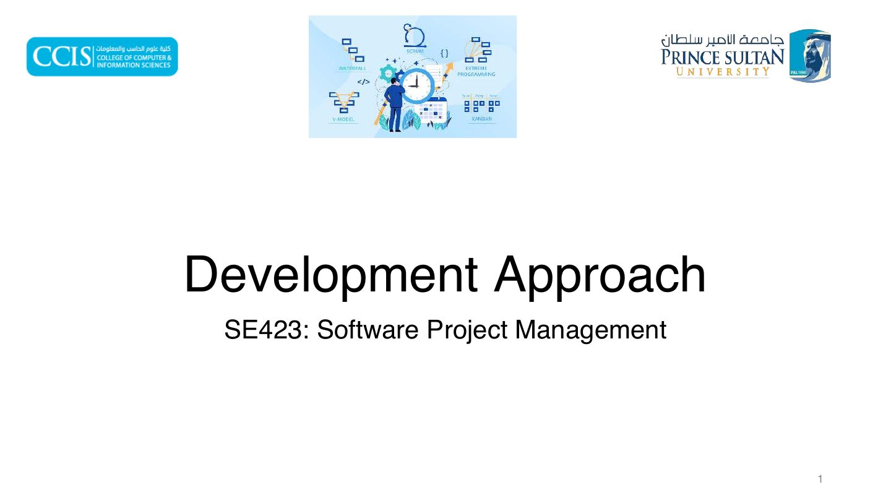
The deck has four parts: methodology concepts, software development processes (waterfall vs. iterative), agile project management (XP and Scrum), and DevOps. The middle two carry most of the exam questions.
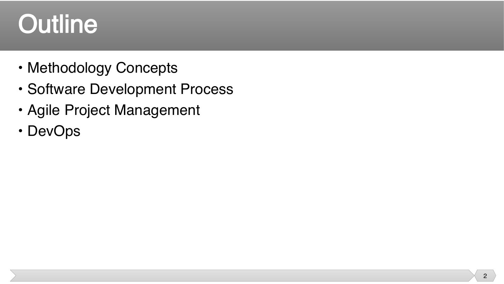
Methodology concepts: the vocabulary (process, model, methodology) and what a methodology contains.
Software development process: plan-driven waterfall vs. evolutionary/iterative.
Agile project management: the manifesto, XP and Scrum.
DevOps: joining development and operations, and what that means for the PM.
Section divider: Methodology Concepts.
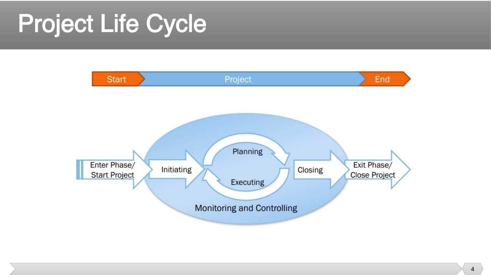
The project life cycle as process groups. Initiating starts the phase or project (charter, stakeholders).
Planning and executing loop around each other, wrapped by monitoring and controlling, which compares progress with the plan and triggers re-planning.
Closing ends the phase or project (acceptance, lessons learned). Every development approach in this deck still sits inside this cycle.
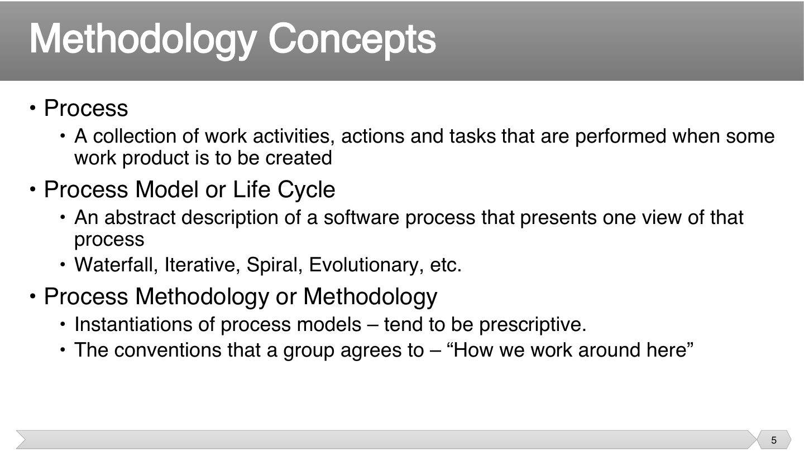
A process is a collection of work activities, actions and tasks performed when some work product is to be created.
A process model (life cycle) is an abstract description of a process that shows one view of it: waterfall, iterative, spiral, evolutionary.
A methodology is an instantiation of a process model: concrete and prescriptive, the conventions a group agrees to, “how we work around here”. So Scrum at your company is a methodology; “iterative” is the model behind it.
Waterfall, iterative and spiral are examples of:
A. Process models (life cycles)
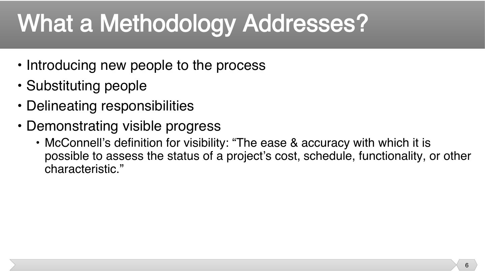
A methodology addresses people issues: introducing new people to the process, substituting people, and delineating responsibilities (who does what).
It also demonstrates visible progress. McConnell defines visibility as the ease and accuracy with which you can assess the status of a project’s cost, schedule, functionality or other characteristics.
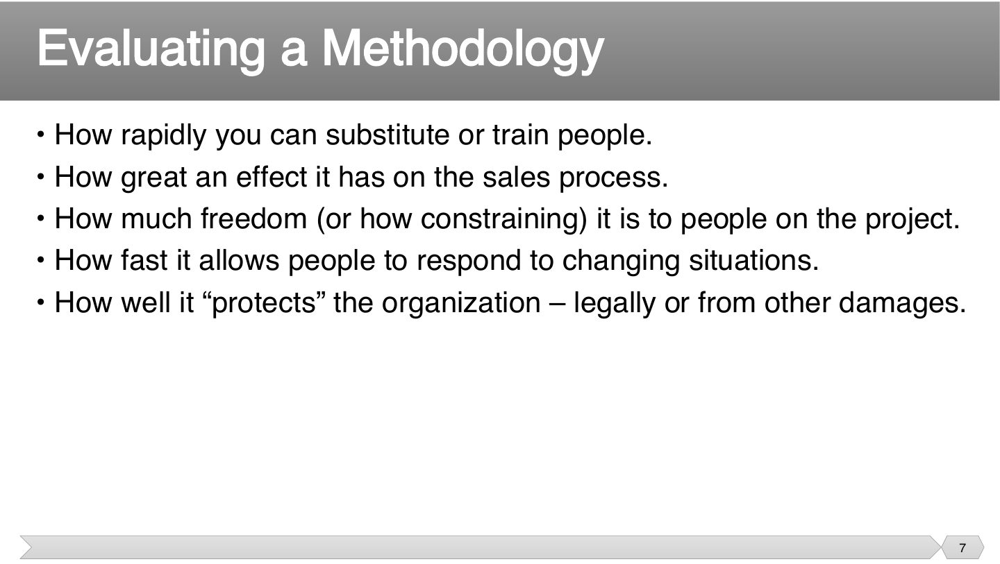
Judge a methodology by how quickly it lets you substitute or train people…
…its effect on the sales process (can you show clients a credible way of working?)…
…how much freedom it leaves people (or how constraining it is)…
…how fast it lets people respond to change…
…and how well it protects the organization, legally or from other damage (e.g. documented approvals).
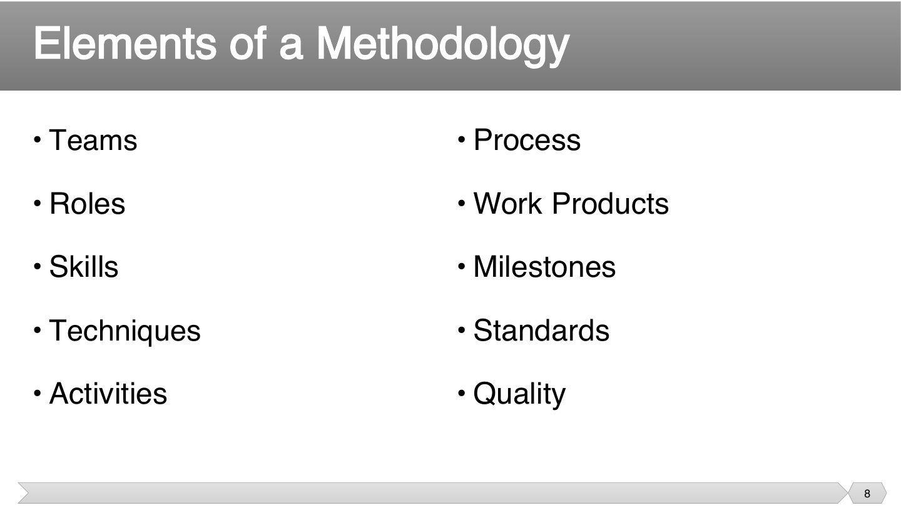
Cockburn’s ten elements of a methodology. The people side: teams, roles, skills, techniques, activities.
The work side: process, work products, milestones, standards, quality. Slides 10–13 define each.
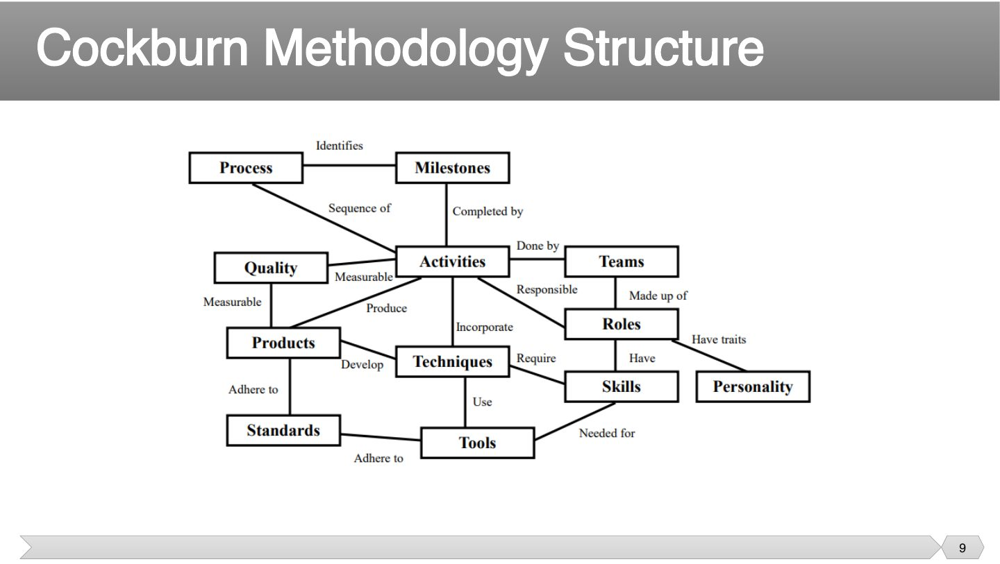
Read the diagram as sentences: the process is a sequence of activities, completed by milestones; activities produce products and incorporate techniques.
Teams are made of roles; roles have skills and are matched to personalities; techniques require skills and use tools.
Products adhere to standards, and quality is measurable on products and activities.
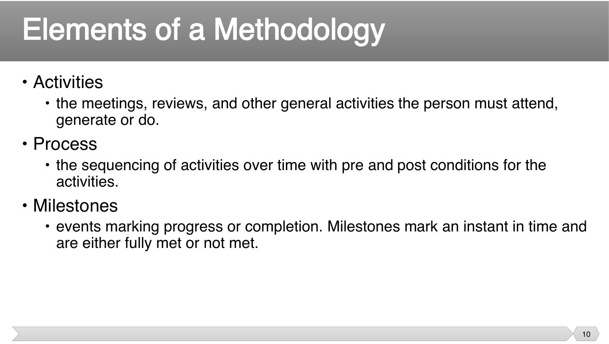
Activities: the meetings, reviews and other general activities a person must attend, generate or do.
Process: the sequencing of activities over time, with pre- and post-conditions for each.
Milestones: events marking progress or completion. A milestone marks an instant (zero duration) and is either fully met or not met; there is no “60% met”.
Explain what is a Gantt chart and describe its significance in planning and tracking project activities. In your answer, define the terms milestone and dependency, and provide one example of each as they would appear in a Gantt chart.
A Gantt chart is a bar chart with activities down the side and a time scale across, where each bar shows an activity’s start, finish and duration; it makes the schedule easy to plan and to track, because actual progress is shaded against the planned bars. A milestone is a significant event with zero duration, either fully met or not, shown as a diamond, e.g. “Requirements signed off”. A dependency is a logical relationship where one activity can’t start (or finish) until another does, shown as an arrow, e.g. “Coding” can’t start until “Design approved” finishes.
A milestone can be 60% met.
False — Milestones mark an instant in time and are either fully met or not met.
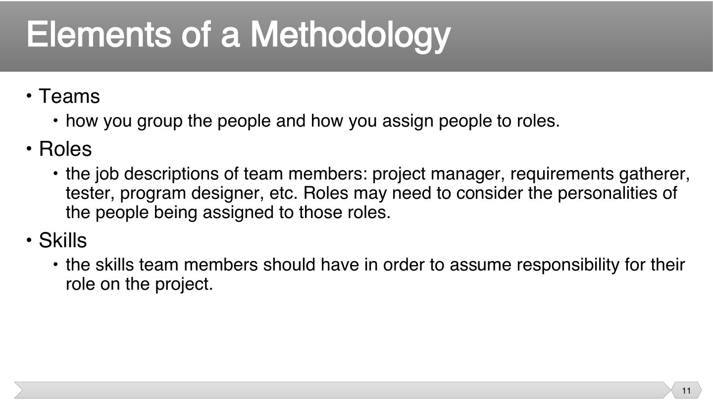
Teams: how you group people and assign them to roles.
Roles: the job descriptions (project manager, requirements gatherer, tester, designer). Assignments should consider the personalities of the people.
Skills: what team members need in order to take responsibility for their role.
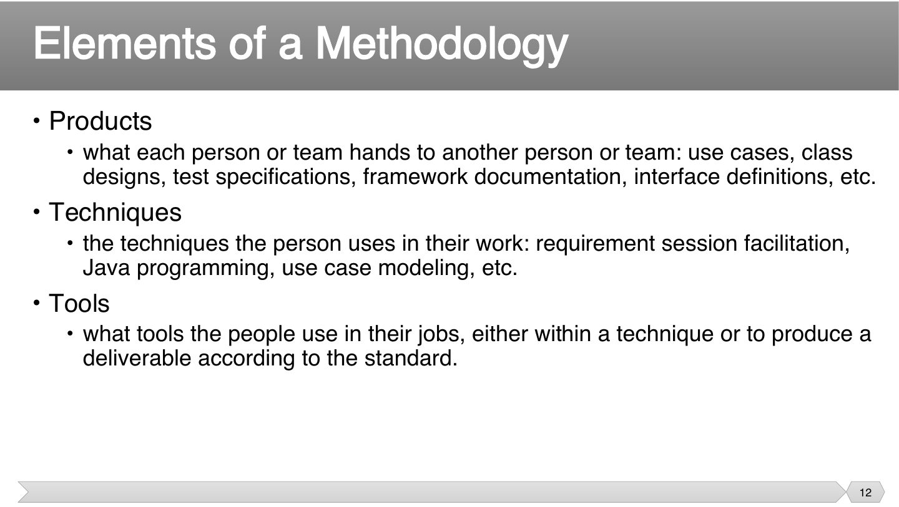
Products: what each person or team hands to another: use cases, class designs, test specifications, interface definitions.
Techniques: how the person does the work: requirements facilitation, Java programming, use case modeling.
Tools: what they use, within a technique or to produce a deliverable to the standard (IDE, Jira, test frameworks).
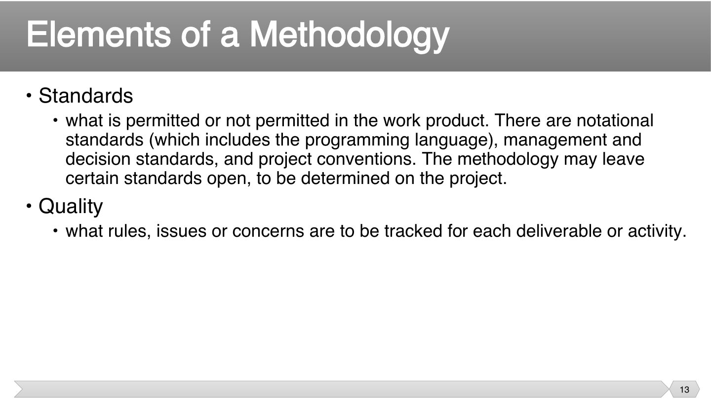
Standards: what is permitted or not in the work product: notational standards (including the programming language), management and decision standards, and project conventions. Some may be left open to decide on the project.
Quality: which rules, issues or concerns are tracked for each deliverable or activity (e.g. code review required, test coverage).
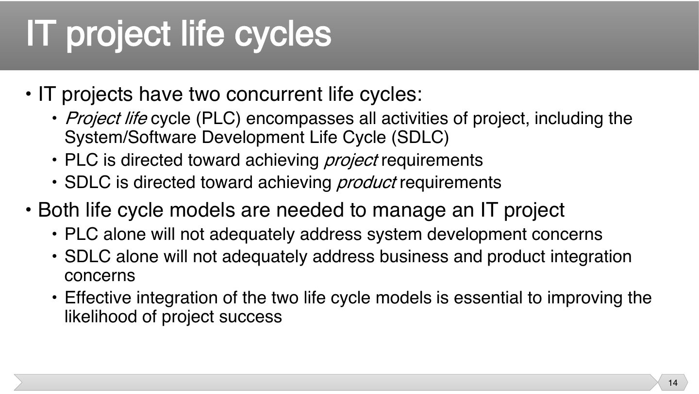
IT projects run two life cycles at once: the project life cycle (PLC) covers all project activities, including the SDLC.
The PLC targets project requirements (scope, time, cost, approvals); the SDLC targets product requirements (features, quality). A common trap: don’t swap them.
Neither is enough alone: the PLC can’t handle system development concerns, and the SDLC can’t handle business and product integration.
Integrating the two is essential to project success.
The SDLC is directed toward achieving:
A. Product requirements
Section divider: Software Development Process.
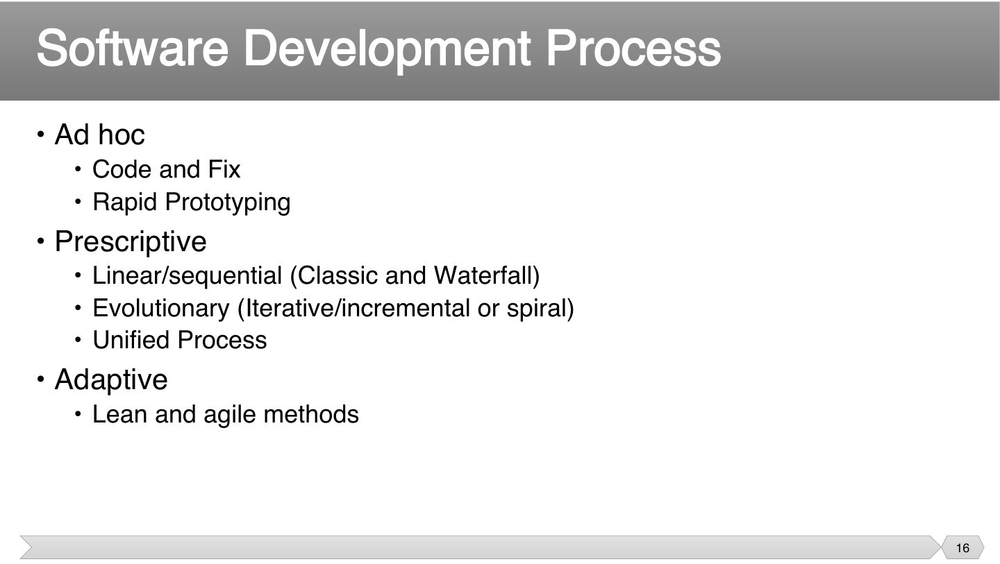
Three families of process. Ad hoc: code and fix, rapid prototyping, with no defined process.
Prescriptive: linear/sequential (classic waterfall), evolutionary (iterative/incremental, spiral) and the Unified Process.
Adaptive: lean and agile methods.
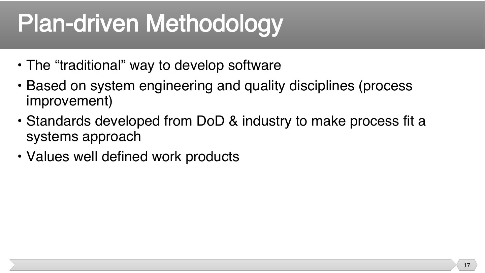
Plan-driven is the traditional way to develop software…
…based on systems engineering and quality disciplines (process improvement)…
…with standards from the US Department of Defense and industry that fit the process to a systems approach…
…and it values well-defined work products (documents, specifications).
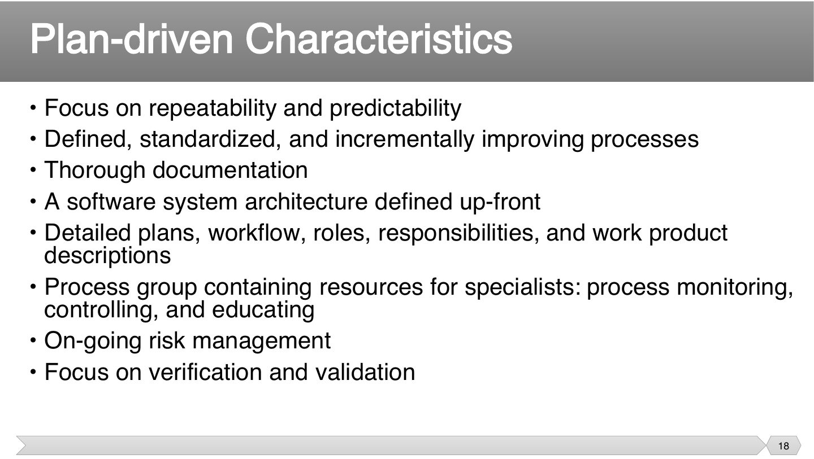
The aim is repeatability and predictability, through defined, standardized, continuously improved processes.
Thorough documentation and an architecture defined up front.
Detailed plans, workflows, roles and work-product descriptions, with a process group of specialists to monitor, control and educate.
Ongoing risk management and a focus on verification and validation.
The term waterfall comes from Winston Royce’s 1970 paper on managing large software systems.
Royce used the pure sequential waterfall as an example of an ill-conceived, risk-prone practice.
He advocated iterative feedback loops between stages, learning incrementally from working software.
Industry adopted its anti-form, the version without feedback loops. A common trap: “Royce recommended the pure waterfall” is false.
Winston Royce’s 1970 paper presented the pure sequential waterfall as an ill-conceived, risk-prone practice.
True
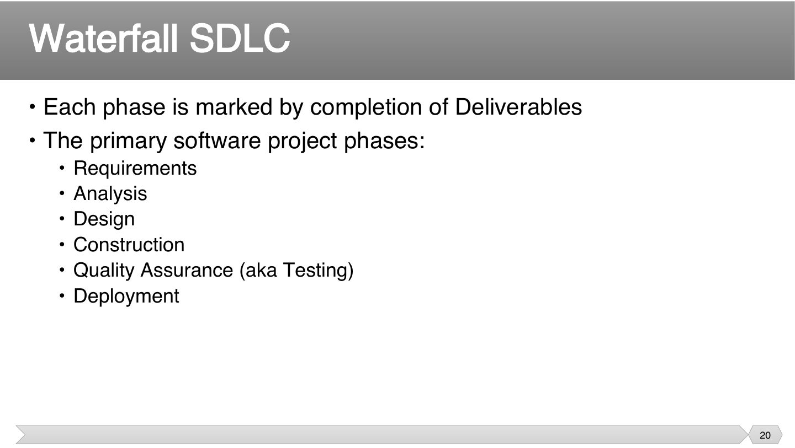
In waterfall each phase ends with the completion of deliverables (a signed-off document or product) before the next starts.
The phases: requirements → analysis → design → construction → QA (testing) → deployment.
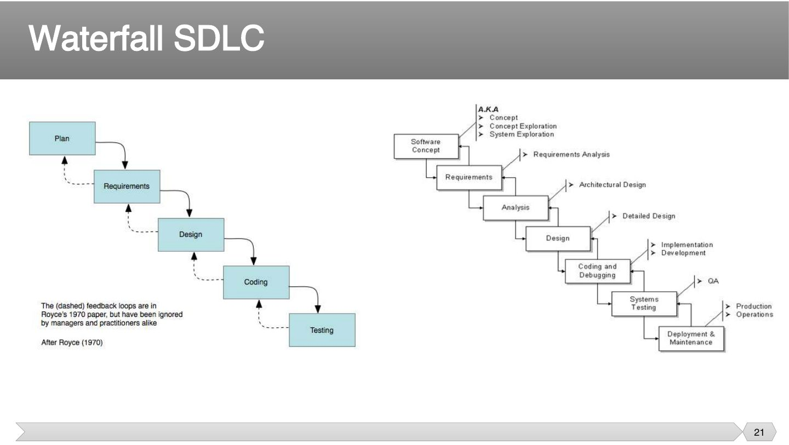
Royce’s waterfall: plan → requirements → design → coding → testing, with dashed feedback loops back to the previous step. The note on the left says those loops were in Royce’s paper but have been ignored by managers and practitioners alike.
On the right, a more detailed version (concept → requirements → architecture → detailed design → coding → testing → deployment). Either way, testing comes last, which is why problems are found late.
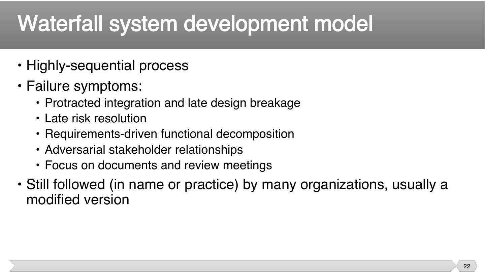
Waterfall is a highly sequential process: no phase overlaps.
Failure symptoms: protracted integration and late design breakage (everything is integrated at the end, where design flaws appear) and late risk resolution (the big risks only show in testing). Also requirements-driven functional decomposition.
Adversarial stakeholder relationships (arguing over signed documents) and a focus on documents and reviews instead of working software.
Many organizations still follow it, usually a modified version.
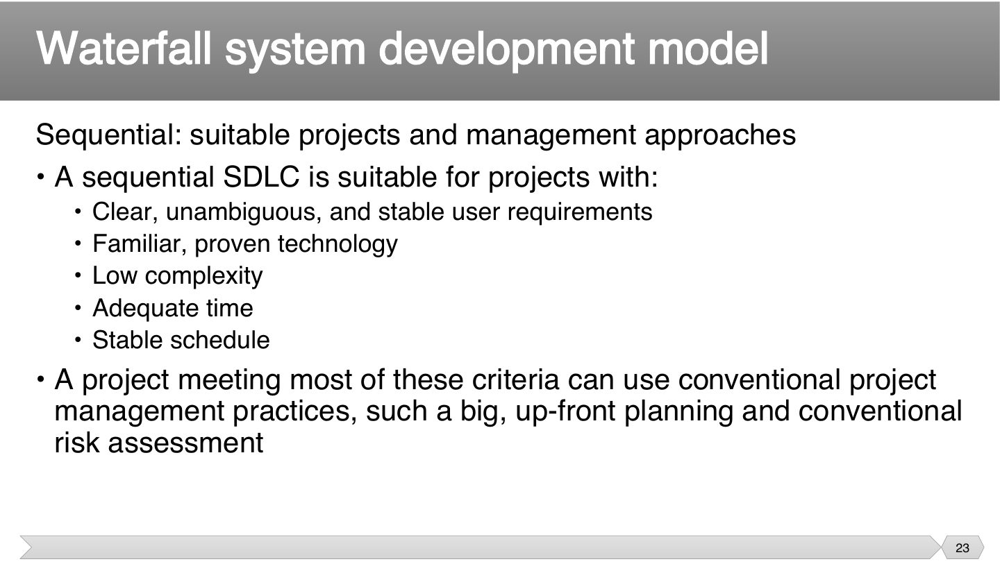
A sequential SDLC suits projects with clear, unambiguous and stable requirements, familiar, proven technology, low complexity, adequate time and a stable schedule. In short: everything is known.
Such a project can use conventional PM practices: big up-front planning and conventional risk assessment.
Given the evolving requirements (student usability, advisor requests, IT integration rules), which development approach (Agile, Waterfall, or Hybrid) would you recommend, and why would it be the best fit for this project?
Agile (Scrum) (0.5), because it handles the evolving requirements from students, advisors and IT, delivers iteratively so each sprint gets feedback, and integrates with DevOps pipelines for frequent tested releases (0.5). Justify it against the slide criteria: the requirements are reasonably clear but not stable, so waterfall’s “clear, unambiguous, stable requirements” condition fails.
Which project suits a sequential (waterfall) SDLC?
A. Stable requirements, familiar technology, low complexity
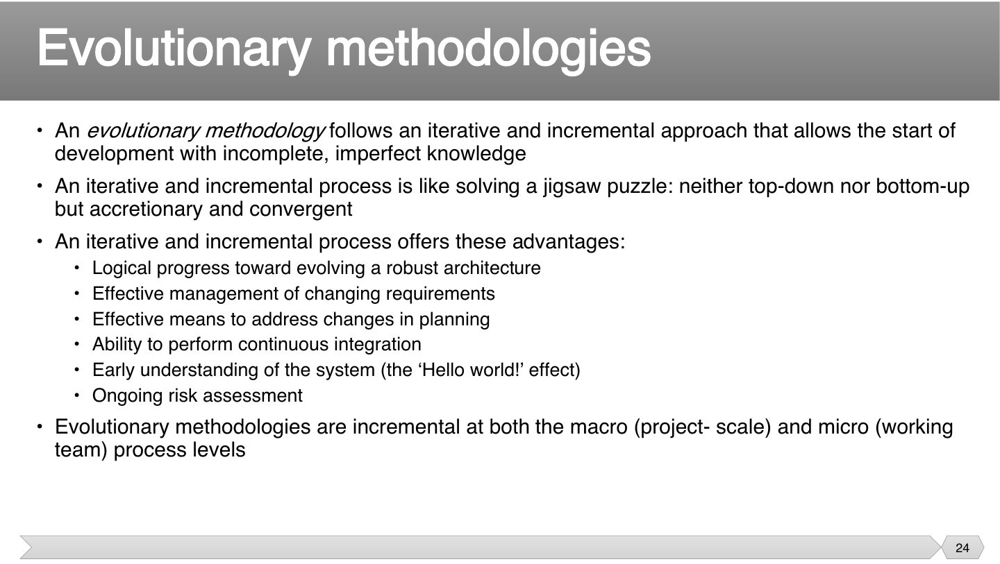
An evolutionary methodology is iterative and incremental: you can start with incomplete, imperfect knowledge.
It is like a jigsaw puzzle: neither top-down nor bottom-up, but accretionary and convergent (pieces accumulate until the picture emerges).
Advantages: an architecture that evolves logically, effective management of changing requirements and planning changes, continuous integration, early understanding (the “Hello world!” effect) and ongoing risk assessment.
It is incremental at both the macro (project) and micro (team) levels.
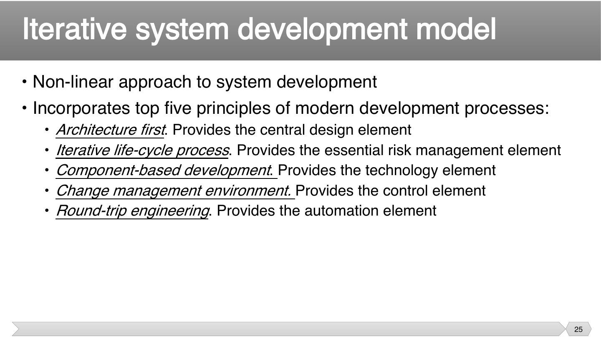
The iterative model is a non-linear approach.
It uses five principles of modern development, each giving one element: architecture first (the design element), iterative life cycle (the risk-management element)…
…component-based development (technology), change management environment (control) and round-trip engineering (automation: keeping models and code in sync).
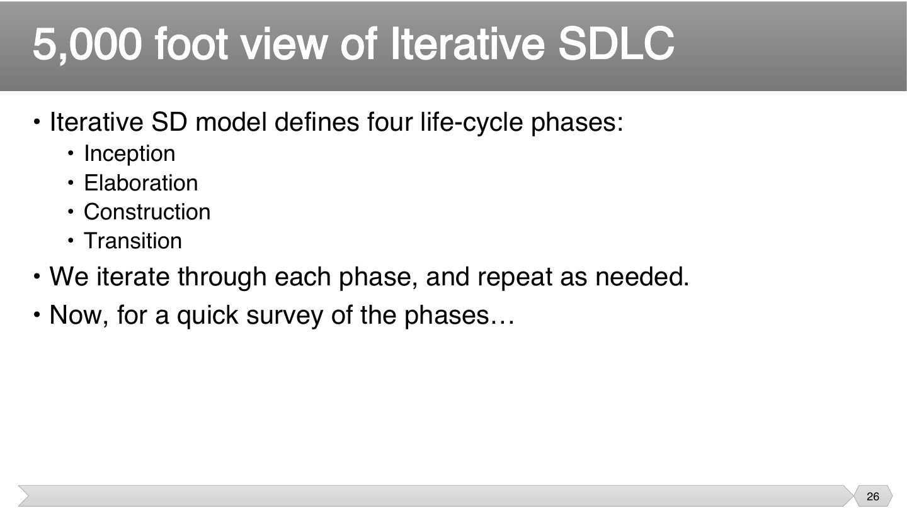
The iterative SDLC has four phases: inception → elaboration → construction → transition (the Unified Process phases).
Each phase can contain several iterations, repeated as needed.
Which is the correct order of the iterative SDLC phases?
A. Inception, elaboration, construction, transition
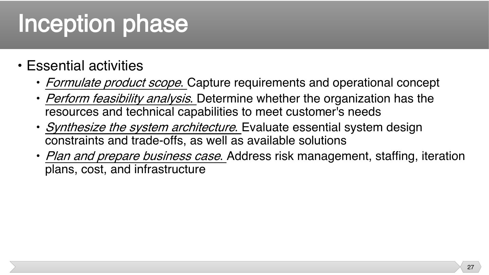
Inception: formulate the product scope (requirements and operational concept)…
…analyze feasibility (does the organization have the resources and technical capability?)…
…synthesize a candidate architecture (design constraints, trade-offs, available solutions)…
…and prepare the business case: risk management, staffing, iteration plans, cost and infrastructure.
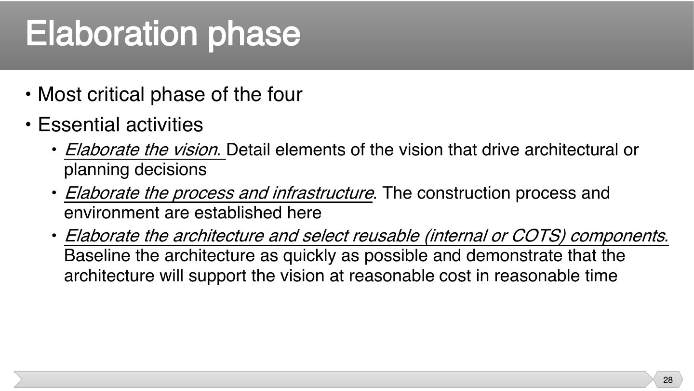
Elaboration is the most critical of the four phases: it removes the biggest risks before heavy spending starts.
Elaborate the vision: detail the parts of the vision that drive architecture or planning decisions.
Elaborate the process and infrastructure: the construction process and environment are set up here.
Baseline the architecture as quickly as possible and show it supports the vision at reasonable cost and time, selecting reusable or COTS components.
Which iterative phase is described as the most critical?
A. Elaboration
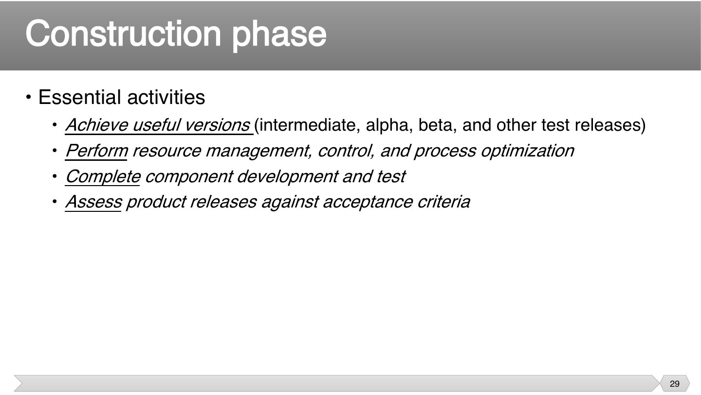
Construction: produce useful versions (intermediate, alpha, beta and test releases)…
…perform resource management, control and process optimization…
…complete component development and testing…
…and assess each release against acceptance criteria.
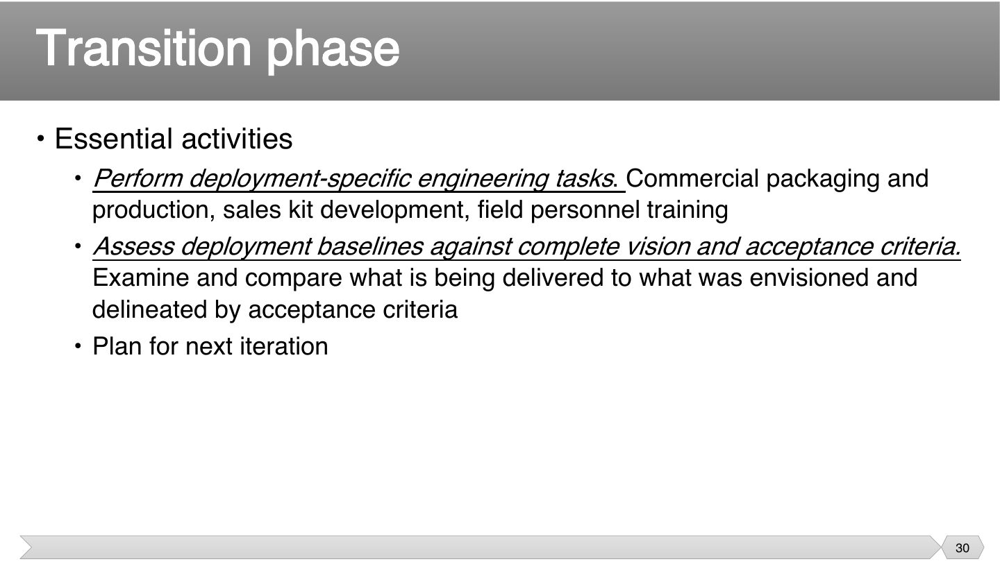
Transition: deployment-specific engineering: packaging, production, sales kits and training of field staff.
Assess the deployed baseline against the full vision and acceptance criteria: compare what is delivered with what was envisioned.
Plan the next iteration or release.
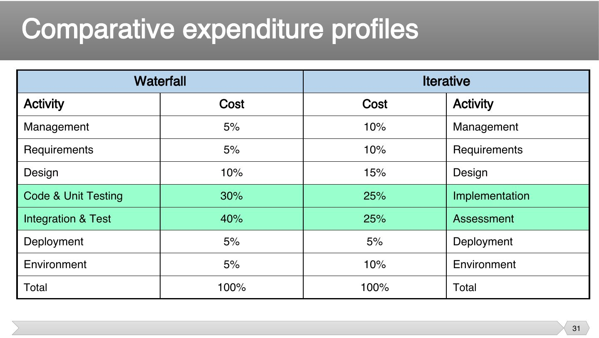
Waterfall spends most of its budget late: 30% on code and unit test and 40% on integration and test, because problems surface only when everything comes together.
Iterative spreads the cost: more on management (10%), requirements (10%) and design (15%), with implementation and assessment at 25% each, since integration happens continuously.
In the waterfall expenditure profile, which activity takes the largest share of cost?
A. Integration and test (40%)
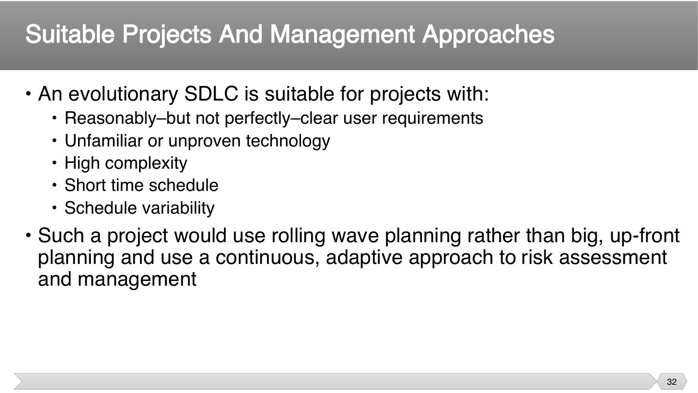
An evolutionary SDLC suits projects with reasonably but not perfectly clear requirements, unfamiliar technology, high complexity, a short schedule and schedule variability. It is the mirror image of slide 23.
Such a project uses rolling wave planning (detailed plans for the near term, rough plans for later) instead of big up-front planning, and a continuous, adaptive approach to risk.
In which type of project would an iterative development approach be most beneficial?
A. A project where requirements are unclear and expected to evolve over time. — Iterative development refines ideas through feedback, which suits unclear or evolving requirements.
Given the evolving requirements (student usability, advisor requests, IT integration rules), which development approach (Agile, Waterfall, or Hybrid) would you recommend, and why would it be the best fit for this project?
Agile (Scrum) (0.5), because it handles the evolving requirements from students, advisors and IT, delivers iteratively so each sprint gets feedback, and integrates with DevOps pipelines for frequent tested releases (0.5). Justify it against the slide criteria: the requirements are reasonably clear but not stable, so waterfall’s “clear, unambiguous, stable requirements” condition fails.
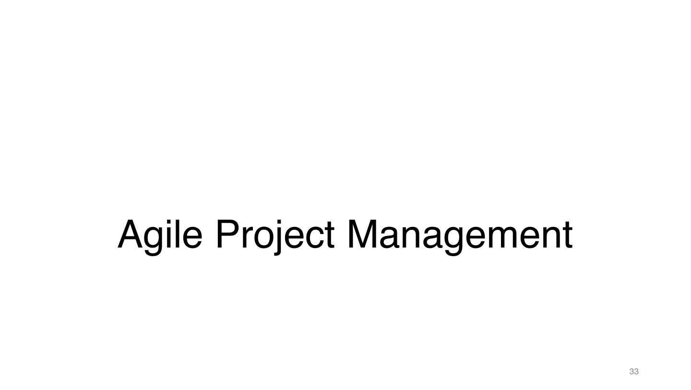
Section divider: Agile Project Management.
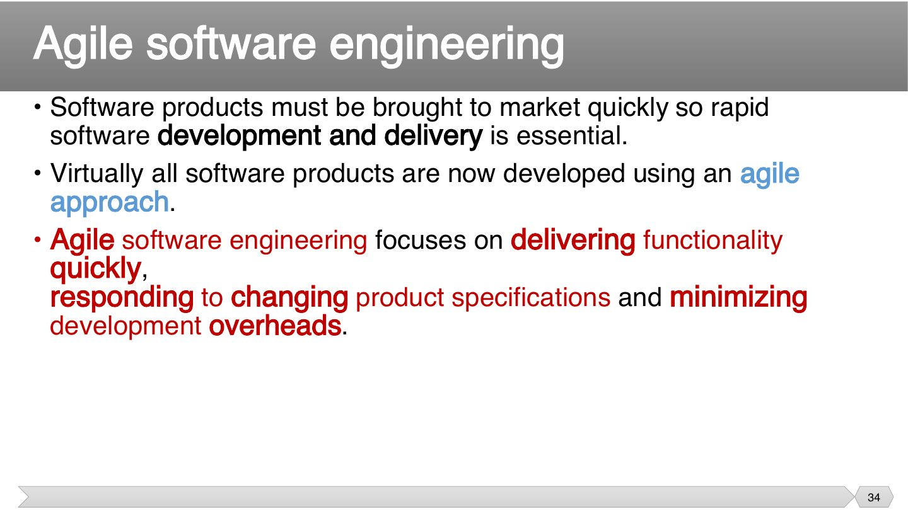
Products must reach the market quickly, so rapid development and delivery are essential.
Virtually all software products are now developed with an agile approach.
Agile focuses on delivering functionality quickly, responding to changing specifications and minimizing overhead.

Agile starts with a mindset, defined by 4 values…
…guided by 12 principles…
…and expressed through many practices (stand-ups, user stories, TDD), which a team chooses to fit its needs.
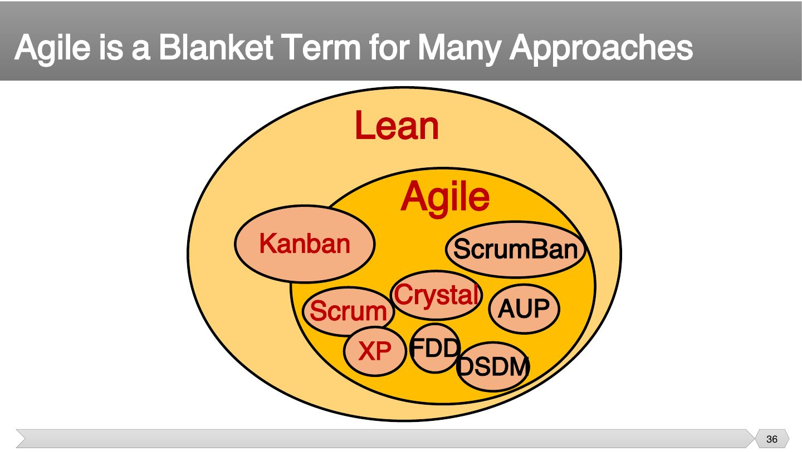
Agile is an umbrella term: Scrum, XP, Kanban, ScrumBan, Crystal, FDD, AUP and DSDM all sit inside it.
Lean is broader still, and agile sits inside it.
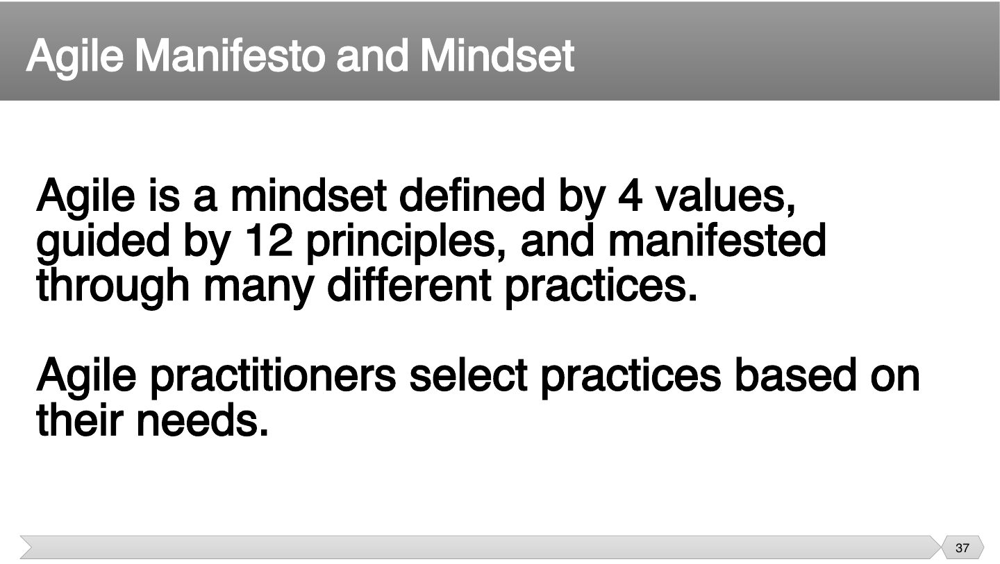
Agile is a mindset defined by 4 values, guided by 12 principles and expressed through many practices.
Practitioners select practices to fit their needs; there is no single “agile process”.
Agile is best described as:
A. A mindset defined by 4 values and 12 principles, expressed through many practices
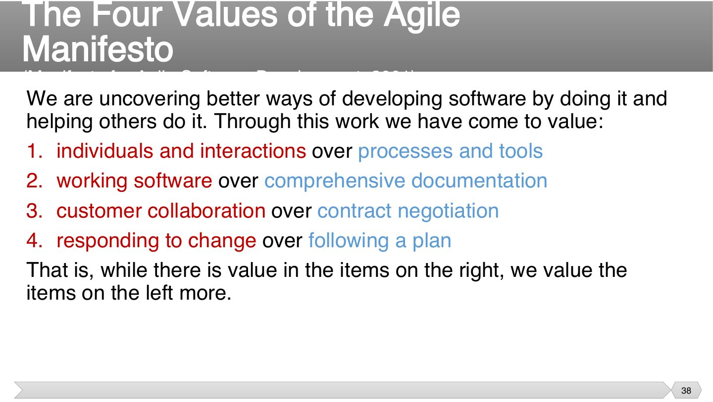
Individuals and interactions over processes and tools: people talking solves more than a tool or process.
Working software over comprehensive documentation: software that runs is the real evidence of progress.
Customer collaboration over contract negotiation: work with the customer, rather than argue over the contract.
Responding to change over following a plan.
The items on the right still have value; the left is valued more. A common trap: agile does not say “no documentation”.
Which is one of the four values of the Agile Manifesto?
A. Customer collaboration over contract negotiation
The Agile Manifesto says documentation has no value.
False — There is value in the items on the right; the items on the left are valued more.
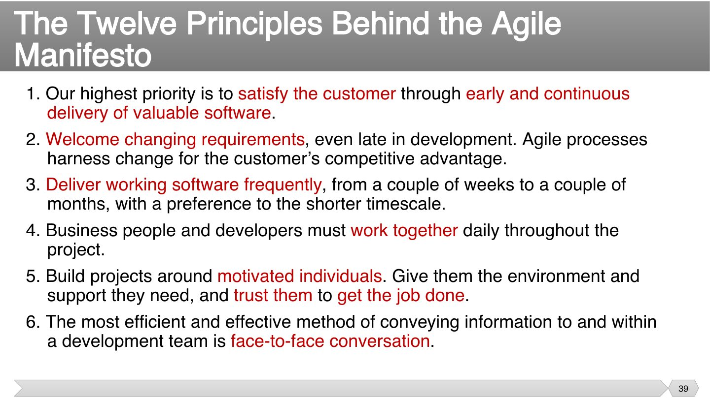
1. The highest priority is to satisfy the customer through early and continuous delivery of valuable software.
2. Welcome changing requirements, even late, for the customer’s competitive advantage.
3. Deliver working software frequently, from a couple of weeks to a couple of months, preferring the shorter.
4. Business people and developers work together daily.
5. Build projects around motivated individuals, give them support and trust them.
6. The most efficient and effective communication is face-to-face conversation.
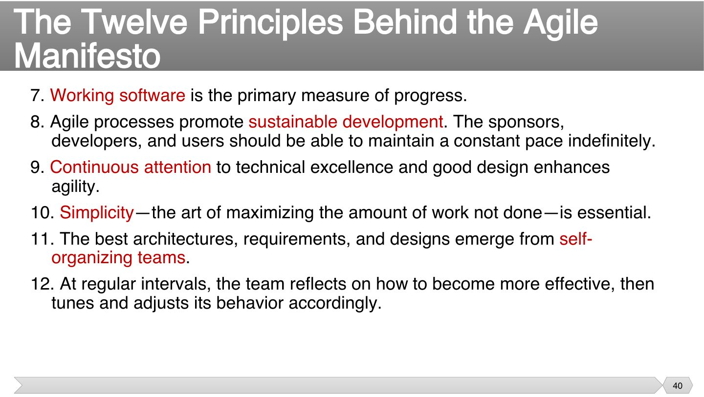
7. Working software is the primary measure of progress, not documents or hours.
8. Sustainable development: sponsors, developers and users can keep a constant pace indefinitely (no death marches).
9. Continuous attention to technical excellence and good design enhances agility.
10. Simplicity, the art of maximizing the amount of work not done, is essential.
11. The best architectures, requirements and designs emerge from self-organizing teams.
12. At regular intervals the team reflects and adjusts its behavior (the retrospective).
According to the agile principles, the primary measure of progress is:
A. Working software
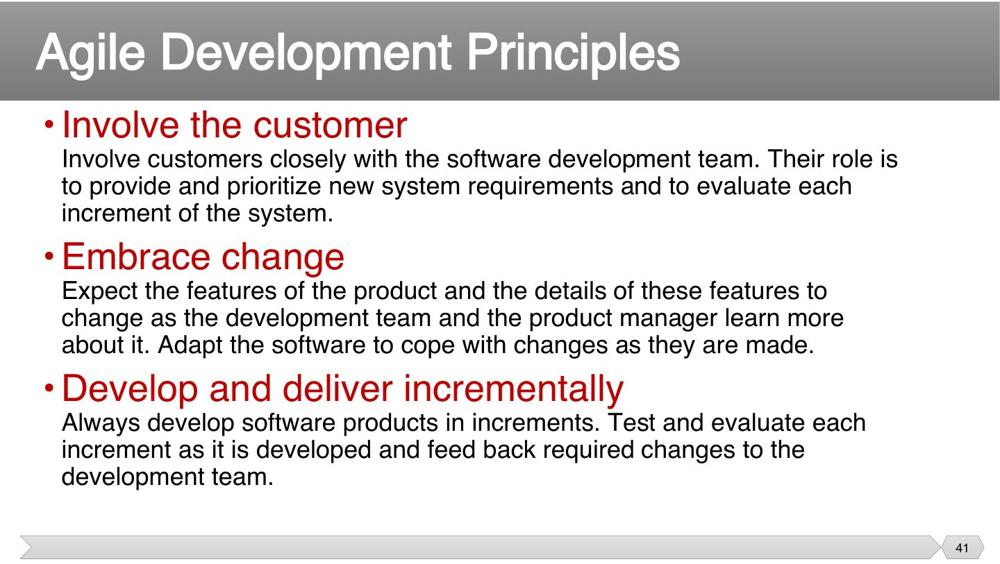
Involve the customer closely: they provide and prioritize requirements and evaluate each increment.
Embrace change: expect features and their details to change as the team and product manager learn; adapt the software as changes come.
Develop and deliver incrementally: test and evaluate each increment and feed back the changes needed.
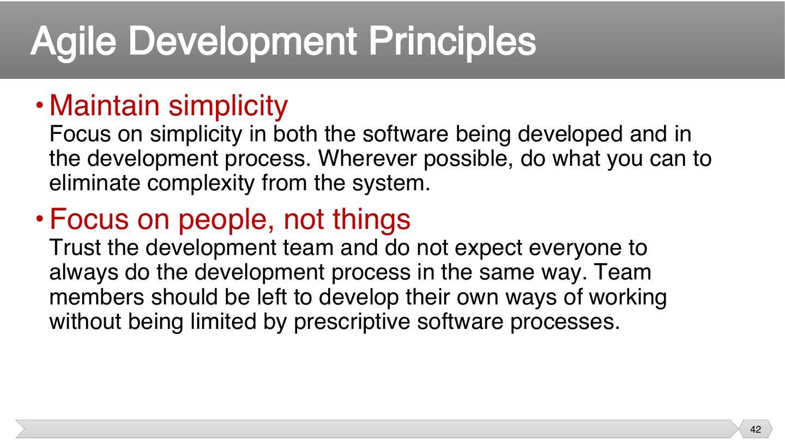
Maintain simplicity in both the software and the process; eliminate complexity wherever possible.
Focus on people, not things: trust the team and let members develop their own ways of working instead of being limited by prescriptive processes.
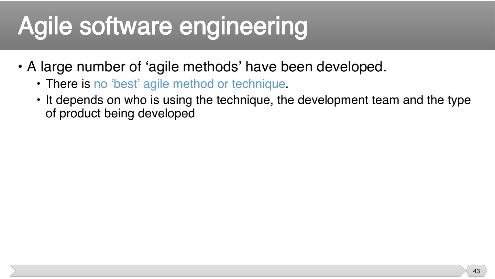
Many agile methods have been developed…
…and there is no single best one…
…it depends on who uses it, the team, and the type of product (tailoring again).
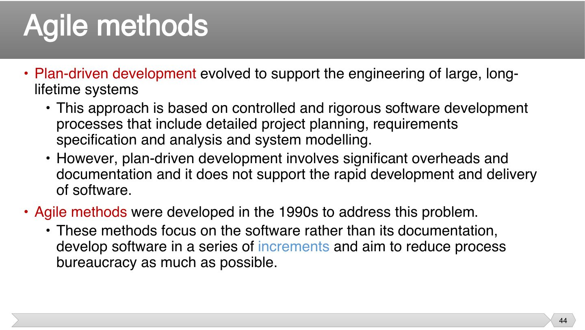
Plan-driven development evolved for large, long-lifetime systems…
…using controlled, rigorous processes with detailed planning, requirements specification and system modeling.
But it carries significant overhead and documentation and doesn’t support rapid delivery.
Agile methods appeared in the 1990s to fix this.
They focus on the software rather than its documentation, develop in increments and reduce bureaucracy as much as possible.
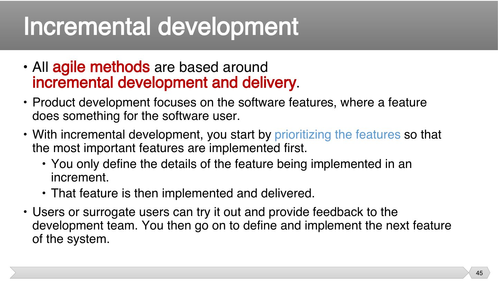
All agile methods are based on incremental development and delivery, organized around features (something useful to the user).
Prioritize features so the most important are implemented first.
Only define the details of the feature being built in this increment; the rest stays rough until it is needed.
Implement and deliver it, let users give feedback, then move to the next feature.
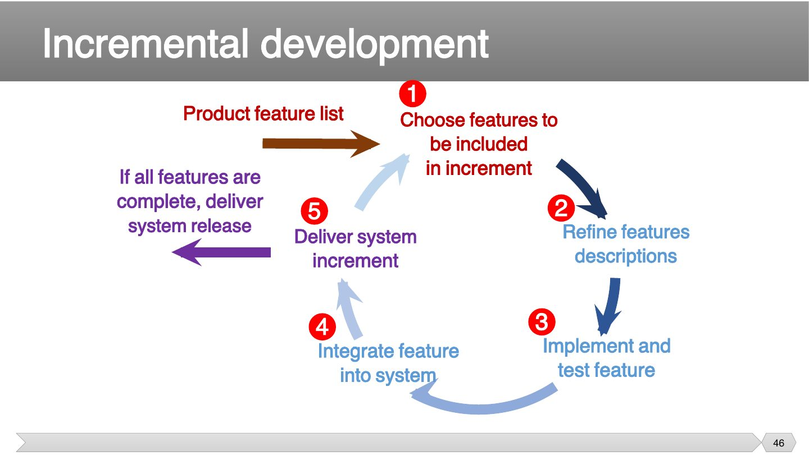
The incremental cycle, starting from the product feature list: (1) choose features for the increment…
(2) refine their descriptions…
(3) implement and test each feature…
(4) integrate it into the system…
(5) deliver the increment; when all features are complete, deliver the system release.
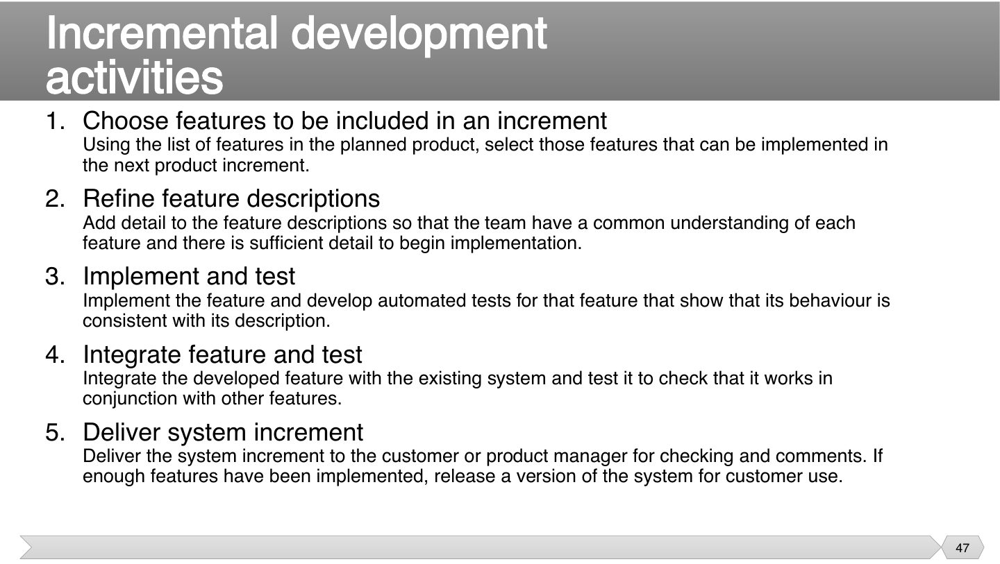
Choose features: from the planned feature list, select what fits the next increment.
Refine descriptions: add enough detail for a common understanding and to start work.
Implement and test: build the feature with automated tests showing it behaves as described.
Integrate and test: add it to the existing system and check it works with the other features.
Deliver: give the increment to the customer or product manager for comments; release a version when enough features are in.
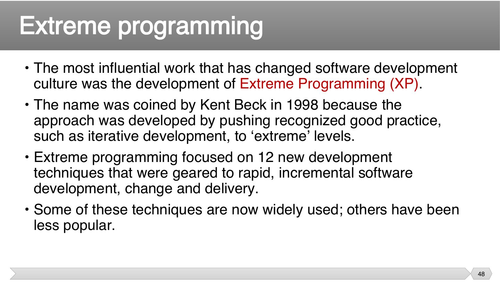
Extreme Programming (XP) was the most influential change to development culture.
Named by Kent Beck in 1998, because it pushed recognized good practice (like iterative development) to “extreme” levels.
It introduced 12 development techniques for rapid, incremental development and delivery…
…some now everywhere, others less popular (e.g. pair programming all day).
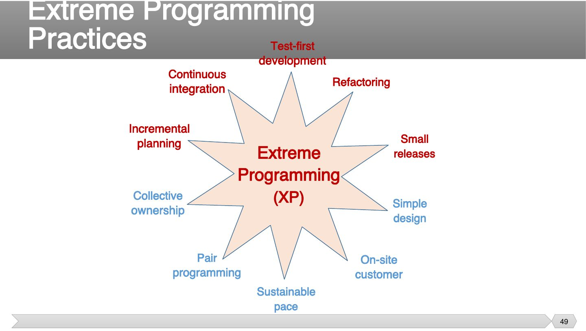
XP practices on the star: test-first development, continuous integration, refactoring, incremental planning, small releases, simple design.
People practices: collective ownership, pair programming and an on-site customer.
Sustainable pace: no long overtime. The next slides cover the widely adopted ones.
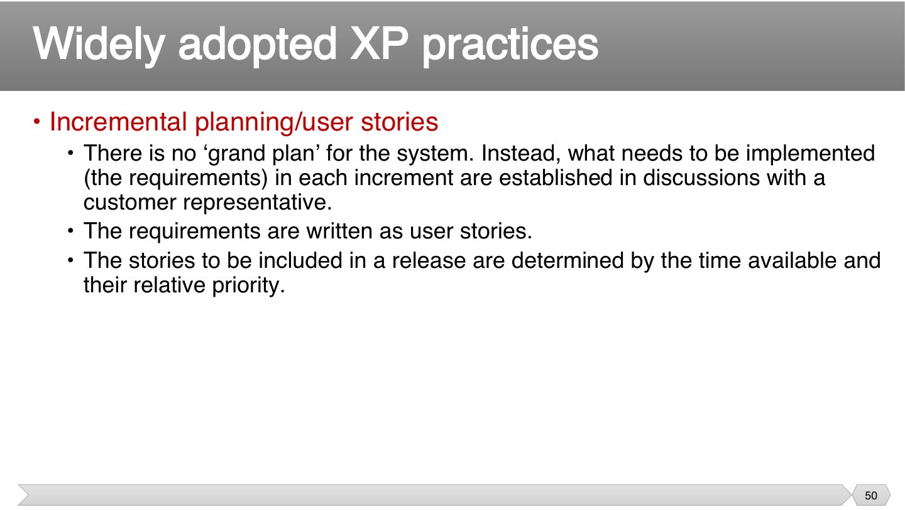
Incremental planning: there is no grand plan; each increment’s requirements are agreed in discussion with a customer representative.
Requirements are written as user stories (“As a …, I want … so that …”).
Which stories go into a release depends on the time available and their relative priority.
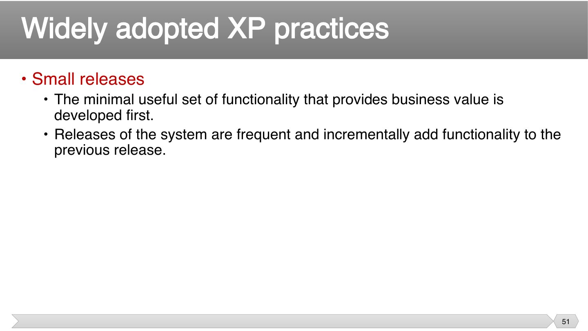
Small releases: the minimal useful set of functionality with business value is developed first (the MVP idea).
Releases are frequent, each adding functionality to the previous one.
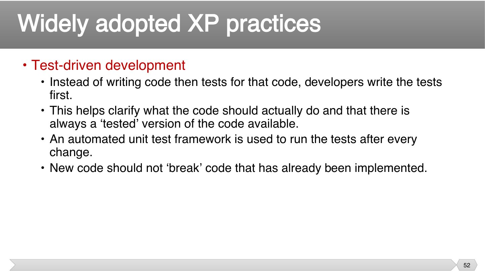
Test-driven development: developers write the tests first, then the code.
This clarifies what the code should do and means a tested version always exists.
An automated unit test framework runs all tests after every change…
…so new code doesn’t break what already works.
In test-driven development, developers:
A. Write tests before writing the code
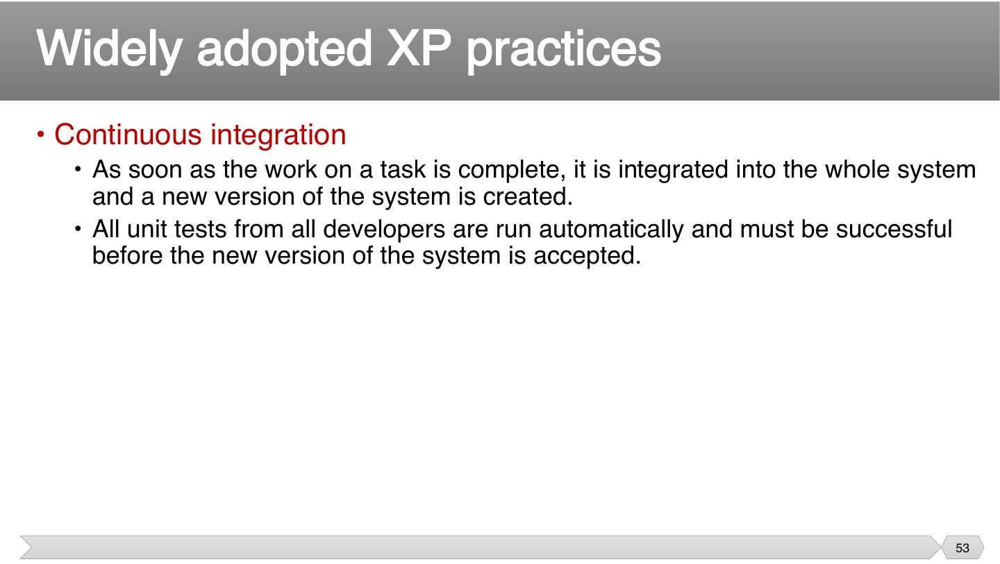
Continuous integration: as soon as a task is finished it is integrated into the whole system and a new version is built.
All unit tests from all developers run automatically and must pass before the new version is accepted, so integration problems appear in minutes instead of at the end.
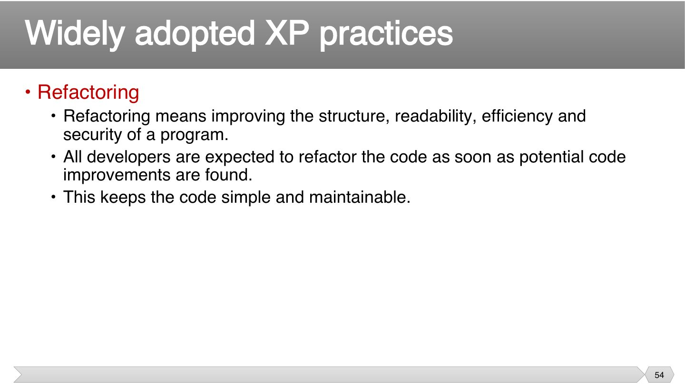
Refactoring means improving the structure, readability, efficiency and security of code without changing what it does.
Everyone refactors as soon as an improvement is spotted…
…which keeps the code simple and maintainable.
A repeat of slide 50: incremental planning with user stories instead of a grand plan.
Managers need to know how much a product will cost, how long it will take and when it can ship.
Plan-driven development answers with long-term plans of deliverables and dates.
But plans always change, so anything beyond short-term plans is unreliable.
Scrum is an agile framework for organization and planning. It mandates no technical practices, unlike XP. A common trap.
Scrum mandates specific technical practices such as pair programming.
False — Scrum provides a framework for organization and planning only; XP defines the engineering practices.
Scrum (the meeting): a daily team meeting where progress is reviewed and the day’s work agreed.
Sprint: a short period, typically two to four weeks, in which a product increment is developed.
ScrumMaster: a team coach who guides the team in using Scrum effectively.
Product: the software being developed by the Scrum team.
Product owner: responsible for identifying product features and attributes; reviews work and helps test.
Product backlog: a to-do list of bugs, features and improvements not yet completed.
Development team: small and self-organizing, five to eight people.
Potentially shippable product increment: a sprint’s output, of high enough quality to deploy.
Velocity: an estimate of how much work the team can do in one sprint, used to plan the next sprints.
The Product Owner keeps the team focused on the product, not diverted into technically interesting but less relevant work.
In product development the product manager normally takes the Product Owner role.
The ScrumMaster is a Scrum expert and a coach, not a conventional project manager; they have authority on how Scrum is used.
In many companies the ScrumMaster also carries some project management duties.
Who keeps the team focused on the product instead of technically interesting but less relevant work?
A. Product Owner
The ScrumMaster is a conventional project manager.
False — The ScrumMaster is a coach for the team.
Work happens in sprints: fixed-length periods (2–4 weeks).
Daily meetings (Scrums) review progress and update the list of incomplete work.
Each sprint should produce a shippable product increment: complete and ready to deploy.
The Scrum cycle: review the product backlog, select items for the sprint and plan the sprint (creating the sprint backlog).
During the sprint the team develops and tests software, with a daily Scrum.
The sprint ends with a shippable increment and a sprint review, then the cycle restarts.
Product backlog: the to-do list, reviewed and updated before each sprint.
Timeboxed sprints: fixed-time (2–4 week) periods implementing backlog items.
Self-organizing teams make their own decisions by discussion and consensus.
The product backlog is the list of what must be done to complete the product.
Its entries are product backlog items (PBIs).
They can be varied: features, user requests, development activities, engineering improvements.
It is always prioritized, with the next items to implement at the top.
PBI types by example. Features: “As a teacher, I want to configure the tools available to each class.”
User request: a pictorial interface for children with limited reading ability.
Development activity: establish criteria for assessing open-source software.
Engineering improvement: refactor UI code, or encrypt all personal data.
“Refactor user interface code to improve performance” is which kind of PBI?
A. Engineering improvement
Ready for consideration: tentative, high-level ideas that may change radically or be dropped.
Ready for refinement: agreed as important, with a reasonably clear definition, but needing work to understand and refine.
Ready for implementation: detailed enough to estimate and build, with dependencies identified.
Refinement: break PBIs into smaller, clearer items (PBI 1 becomes 1.1 and 1.2).
Estimation: estimate the effort for items (PBI 2E, 3E).
Prioritization: reorder the backlog by value.
Creation: add new items as they are discovered (PBI 6). The result is a revised backlog.
Sprint activities: sprint planning produces the sprint backlog; sprint execution develops software with daily Scrums.
Work is continuously integrated, and the sprint review closes the sprint.
Team-focused external interactions (with management, other teams, HR) go through the ScrumMaster.
Product-focused ones (customers, marketing, sales) go through the Product Owner. Either way, the developers are shielded from distractions.
Even in Scrum, someone must do PM work. Reporting: budget, schedule, risks, problems, progress.
Administration: finance, compliance, procurement, liaison.
People: vacations, absence, work quality, reviewing, hiring. Often the ScrumMaster or a PM takes these on.
Agile methods suit rapid product development and delivery…
…through iterative development and minimal overhead.
XP introduced practices now mainstream: user stories, test-first development and continuous integration.
Scrum focuses on agile planning and management and, unlike XP, does not define engineering practices; the team picks its own.
Work is kept in a product backlog, and each increment implements some of its items.
Sprints are fixed-time (2–4 weeks), and their increments must be potentially shippable without further work.
A self-organizing team organizes its work by discussion and agreement.
Scrum practices (backlog, sprints, self-organizing teams) can be used in any agile process, even without the rest of Scrum.
The key line in the triangle: waterfall fixes scope and lets time and cost vary; agile fixes time and cost (the timebox and team) and lets scope vary.
The table compares the rest: waterfall focuses on processes, manages by plans, plans requirements up front, involves the customer at the start and end, and delivers everything at the end; agile focuses on people, manages by change, updates requirements every iteration, involves the customer all the time, uses self-organized teams and coaching leadership, and delivers frequently in parts.
In agile, which of the triple constraints is typically allowed to vary?
A. Scope
Given the evolving requirements (student usability, advisor requests, IT integration rules), which development approach (Agile, Waterfall, or Hybrid) would you recommend, and why would it be the best fit for this project?
Agile (Scrum) (0.5), because it handles the evolving requirements from students, advisors and IT, delivers iteratively so each sprint gets feedback, and integrates with DevOps pipelines for frequent tested releases (0.5). Justify it against the slide criteria: the requirements are reasonably clear but not stable, so waterfall’s “clear, unambiguous, stable requirements” condition fails.
Section divider: DevOps = development and operations.
The DevOps gap. Agile development delivers iterative, incremental progress and keeps sending change requests…
…while IT operations care about infrastructure, deployment and system reliability, and resist frequent major releases and patches. Fast change and stability pull against each other.
Organizations close the DevOps gap by removing the barriers to collaboration between operations and development…
…adopting a collaborative, learning-centric mindset supported by agile practices, and often investing heavily in automation.
Development adopts continuous delivery, and operations become streamlined and automated.
DevOps extends agile principles by joining development and operations into one homogeneous unit.
The flow between the formerly siloed sides becomes seamless, and there are fewer production defects because operating requirements were considered from the start.
DevOps extends agile principles by:
A. Integrating development and operations into one unit
The market figures are context only (not exam material): DevOps is growing fast.
DevOps still needs project management to finish on schedule and under budget…
…through careful planning, resource allocation and coordination between many stakeholders.
With continuous CI/CD, DevOps can seem at odds with project management, which follows timelines with a start and end.
Classic PM tools (timelines, Gantt charts, milestones) fit waterfall delivery more naturally.
But PM can adapt: break work into sprints, focus on iterative progress, embrace change.
The key: stop centering on one final product and plan incremental deliveries at the end of each sprint.
DevOps project management is a union of the two: PM tailored to support the DevOps model.
PMs act as coordinators between contributors and trackers of timelines and dependencies: making collaboration smooth, removing bottlenecks, resolving conflicts.
They must also be closely aligned with the DevOps team and have a deep understanding of the development process.
Six best practices (detailed on slides 83–88): develop a collaborative culture…
…embrace the MVP mindset…
…focus on both on-time and quality delivery…
…emphasize dependencies…
…let tools do the heavy lifting…
…and track the right metrics: deployment frequency, lead time for changes, change failure rate and mean time to recovery (MTTR), the four DORA metrics.
Give an example of a project management tool or technique that you might use to manage a complex software development project, and explain how it could help you ensure project success.
A Work Breakdown Structure: it decomposes the complex system into smaller deliverables and work packages that can be estimated, assigned and tracked, so nothing is forgotten, ownership is clear, and it is the base for the schedule, budget and risk analysis. Other valid answers, each with its benefit explained: a Gantt chart, CPM, a risk register, or a Scrum board with a burndown chart and Jira/CI dashboards for real-time visibility (slide 87).
Which is one of the DevOps metrics listed on the slide?
A. Mean time to recovery (MTTR)
A collaborative culture: open communication, shared goals and mutual respect; break down silos and share ownership of outcomes.
How: get leadership on board from the start, choose the right communication tools, align the right people, educate and train the team.
Give the team autonomy and ownership, build continuous learning and shared responsibility…
…with open communication, trust and respect, and a common vision.
MVP mindset: prioritize features with immediate value and avoid over-planning or chasing perfection early.
The minimum viable product is the simplest version that still meets the central requirements.
DevOps uses it so there is always a deliverable at the end of each sprint, without an overly wide scope delaying it.
A big shift from traditional PM’s final monolithic product: DevOps is a constant process of improvement, not a line with fixed start and end dates.
Customers get something sooner, and their feedback lets the team correct course early.
On-time and quality: set realistic timelines, monitor quality metrics (defect rates, rollback frequency) and embed testing in the pipeline.
PM emphasizes deadlines, but many DevOps success metrics are qualitative: is the customer reaching their goals with the application?
Fast turnaround matters, and so does allocating enough time and resources for quality; the PM weighs both when setting sprint goals.
Effective delegation requires knowing the dependencies for each task.
Emphasize dependencies: map them early, track them continuously and resolve blockers proactively.
Even in a microservice architecture there are dependencies between services, the systems they run on and the data they handle.
Tracking dependencies goes beyond configuration management: it needs visibility into the IT environment and the team’s tasks to set sprint goals.
Each deliverable must work in the existing environment and be ready to deploy at the end of each cycle; if delivery is slowed by blocked tasks or unmet system requirements, dependency tracking needs to improve.
Use tools: dashboards, issue trackers, CI/CD platforms and communication tools streamline work and give visibility; automation scales the team’s effort.
PM tools are a single source of truth for who is doing what, how the project is going and what issues occurred.
They integrate with the developers’ tools so everyone sees the same thing: a developer updates a Jira ticket and the PM sees it instantly; a failed Jenkins deployment alerts both teams.
Dashboards give real-time metrics against goals so the PM spots problems early.
Track the right metrics: deployment frequency, lead time for changes, change failure rate and MTTR; use them to guide decisions, find bottlenecks and celebrate progress.
DevOps recommends constant performance tracking, using PM tools with built-in analytics.
Useful indicators: lead time, mean time to detect and issue severity, so problems are found early and corrected quickly.
The enterprise’s goals decide which metrics; profitability-linked ones such as unit cost (average cost to deliver one feature, story, fix or deployment) help any team.
Combining DevOps practice (CI/CD, automation) with PM principles (planning, task definition, progress tracking) improves coordination between individuals and sprint goals.
Task scopes are well defined and dependencies tracked, so the application is ready to deploy.
Tools such as Jira, GitHub, GitLab, GitHub Actions and Jenkins make this visible to PMs and team members alike.
Jenkins, an open-source automation server, at the center of a DevOps toolchain (Docker, Kubernetes, AWS, Azure, Terraform, Git). It automates build, test and deployment.
Jenkins integrates with Maven to build the software automatically…
…and with GitHub for traceability: each build links back to the commits that triggered it.
PM roles have evolved with Scrum and agile.
A DevOps PM is a bridge between contributors and tracks deadlines and commitments.
They need strong awareness of the development process and the skills required, working closely with the DevOps team.
They manage the product from development to production and also work on technical details as technical orchestrators, unlike a traditional PM.
They manage integration, the flow of development, testing, coordination and deployment.
A DevOps project manager stays away from technical details, like a traditional project manager.
False — DevOps PMs work on technical details as technical orchestrators.
The DevOps PM’s two specificities (detailed next): treat development and operations as a single organization…
…and embrace change effectively.
Traditionally developers write code and hand it off to operations, which causes miscommunication, delays and finger-pointing.
In DevOps, development and operations work together from the start, sharing goals, tools and responsibilities as one entity.
This needs a leader to oversee the flow end to end, like a typical PM plans, acquires and executes.
Value stream maps are a natural extension of the PM’s Gantt-chart skills: Gantt charts plan tasks, timelines and dependencies…
…while value stream maps visualize the entire flow from idea to deployment, showing where value is added and where waste or delays occur.
It shifts the focus from task scheduling to process optimization.
A single organization prevents silos.
The teams are merged to work across the whole lifecycle and gain skills from development and testing to deployment and operations.
DevOps is unsuccessful unless Dev and Ops truly collaborate.
Effects on task handling: shared education and responsibilities, better productivity and collaboration, understanding deployment risks, awareness of tool quality and managing added tasks.
Agile PM makes clear that embracing change, not sticking to the plan, is crucial.
Managing change and incremental releases takes a lot of communication and teamwork; communication is the PM’s primary skill, and enterprises should use it.
To thrive with change, PMs start with small projects to test ideas, and use the MVP to deliver value early and often, with agile planning tools.
Eliminate silos through cross-functional collaboration and reduce hand-offs to cut delays.
Create real-time visibility with shared dashboards, and reduce overhead by simplifying processes.
Manage change collaboratively: involve the team in planning and adapting.
Your organization wants to move a waterfall team to DevOps. As the PM, what would you change first and why?
Treat development and operations as one team with shared goals and tools, to stop hand-offs and finger-pointing. Start with a small project and an MVP so there is a deliverable every sprint; build a CI/CD pipeline with automated tests; map and track dependencies; use shared dashboards (Jira, Jenkins) for real-time visibility; and track metrics such as deployment frequency, lead time, change failure rate and MTTR to show improvement.